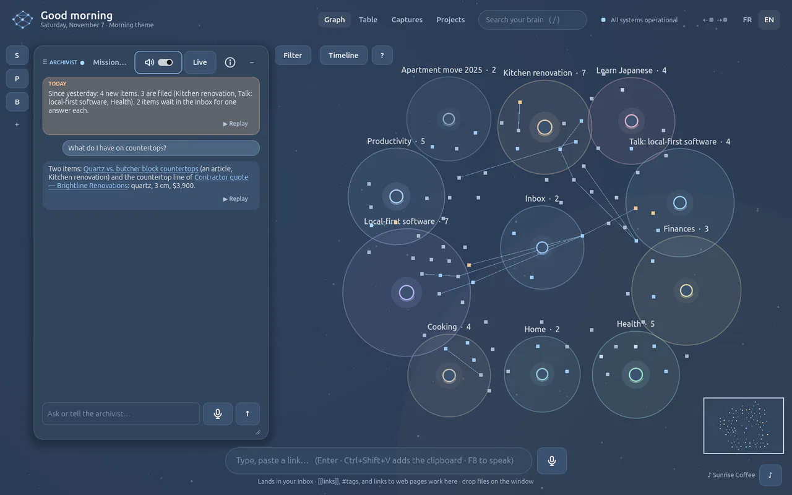
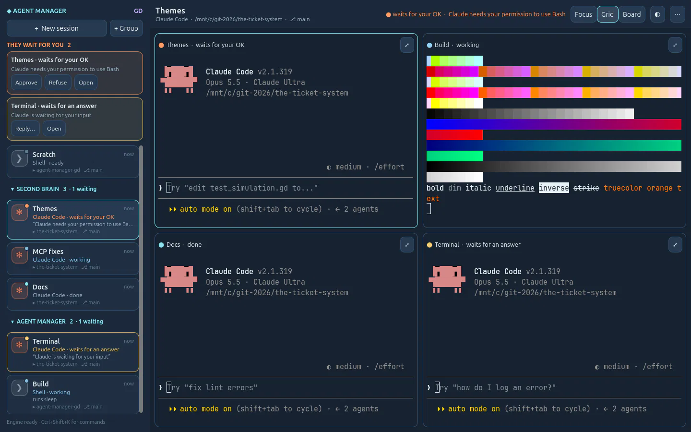

A small lab of AI-native apps, made with Godot.
Desktop software with the AI at the centre and an interface drawn by a game engine. Two apps so far, both used every day.

second-brain-gdSecond Brain GD
A second brain on your computer. Speak, drop or send: the Archivist agent files it, and your AI agents share it over MCP. Visit →
agent-manager-gdAgent Manager GD
Every coding agent in one control room: Claude Code, Codex and shells in real terminals, with the Brain in every session. Visit →Built with
- Godot 4.7
- GDScript
- Python
- SQLite
- C++ · libghostty-vt
- MCP
- Claude Code · Codex
The same recipe in every app: a Godot interface, a local Python engine beside it, AI agents, and the Second Brain as shared memory.
Open source
MIT licence, each app with its devlog. github.com/sonixz
Latest from the blog
The lab opens · 9 November 2026